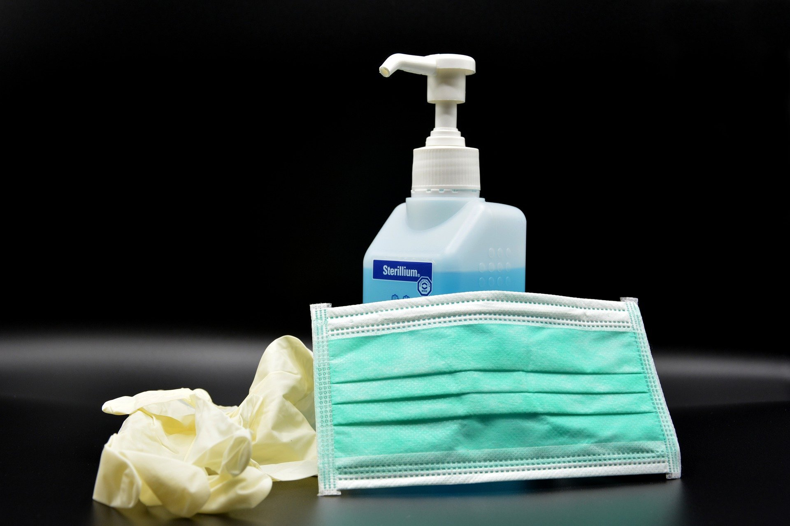

आप कुछ साधारण सावधानियां बरतकर COVID -19 के संक्रमित होने या फैलने की संभावनाओं को कम कर सकते हैं:
1.) अपने हाथों को अल्कोहल-आधारित हाथ से नियमित रूप से और अच्छी तरह से साफ करें या उन्हें साबुन और पानी से धोएं।
क्यों?
अपने हाथों को साबुन और पानी से धोना या अल्कोहल-आधारित हाथ रगड़ना उन वायरस को मारता है जो आपके हाथों पर हो सकते हैं।
2.) अपने और दूसरों के बीच कम से कम 1 मीटर (3 फीट) की दूरी बनाए रखें।
क्यों?
जब कोई व्यक्ति खांसता है, छींकता है, या बोलता है, तो वे अपनी नाक या मुंह से छोटी तरल बूंदें छिड़कते हैं जिसमें वायरस हो सकता है। यदि आप बहुत करीब हैं, तो व्यक्ति को बीमारी होने पर आप COVID-19 वायरस सहित बूंदों में सांस ले सकते हैं।

3.) भीड़-भाड़ वाली जगहों पर जाने से बचें।
क्यों?
जहां लोग भीड़ में एक साथ आते हैं, आपको COIVD-19 से किसी के निकट संपर्क में आने की अधिक संभावना है और 1 मीटर (3 फीट) की भौतिक दूरी बनाए रखना अधिक कठिन है।
4.) आंखों, नाक और मुंह को छूने से बचें।
क्यों?
हाथ कई सतहों को छूते हैं और वायरस उठा सकते हैं। एक बार दूषित होने पर, हाथ वायरस को आपकी आंखों, नाक या मुंह में स्थानांतरित कर सकते हैं। वहां से, वायरस आपके शरीर में प्रवेश कर सकता है और आपको संक्रमित कर सकता है।

5.) सुनिश्चित करें कि आप और आपके आस-पास के लोग अच्छे श्वसन स्वच्छता का पालन करें। इसका मतलब है खांसी या छींक आने पर अपनी मुड़ी हुई कोहनी या ऊतक से मुंह और नाक को ढंकना। फिर उपयोग किए गए ऊतक को तुरंत निपटाने और अपने हाथों को धो लें।
क्यों?
बूंदों से वायरस फैलता है। अच्छी श्वसन स्वच्छता का पालन करके, आप अपने आसपास के लोगों को सर्दी, फ्लू और सीओवीआईडी -19 जैसे वायरस से बचाते हैं।

6.) जब तक आप ठीक न हो जाएं, तब तक खांसी, सिरदर्द, हल्का बुखार जैसे मामूली लक्षणों के साथ भी घर पर रहें। क्या कोई आपके लिए आपूर्ति लाता है। यदि आपको अपना घर छोड़ने की आवश्यकता है, तो दूसरों को संक्रमित करने से बचने के लिए मास्क पहनें।
क्यों?
दूसरों के साथ संपर्क से बचने से संभव COVID-19 और अन्य वायरस से उनकी रक्षा होगी।

7.) यदि आपको बुखार, खांसी और सांस लेने में कठिनाई है, तो चिकित्सा पर ध्यान दें, लेकिन यदि संभव हो तो अग्रिम में टेलीफोन पर कॉल करें और अपने स्थानीय स्वास्थ्य प्राधिकरण के निर्देशों का पालन करें।
क्यों?
आपके क्षेत्र की स्थिति की जानकारी के लिए राष्ट्रीय और स्थानीय अधिकारियों के पास सबसे अधिक तारीख होगी। अग्रिम में कॉल करने से आपका स्वास्थ्य देखभाल प्रदाता आपको जल्दी से सही स्वास्थ्य सुविधा के लिए निर्देशित कर सकेगा। यह आपकी रक्षा भी करेगा और वायरस और अन्य संक्रमणों को फैलने से रोकने में मदद करेगा।

8.) डब्ल्यूएचओ या आपके स्थानीय और राष्ट्रीय स्वास्थ्य अधिकारियों जैसे विश्वसनीय स्रोतों से नवीनतम जानकारी पर तारीख तक रखें।
क्यों?
स्थानीय और राष्ट्रीय अधिकारियों को इस बात की सलाह देने के लिए सबसे अच्छा स्थान दिया जाता है कि आपके क्षेत्र के लोगों को अपनी सुरक्षा के लिए क्या करना चाहिए।